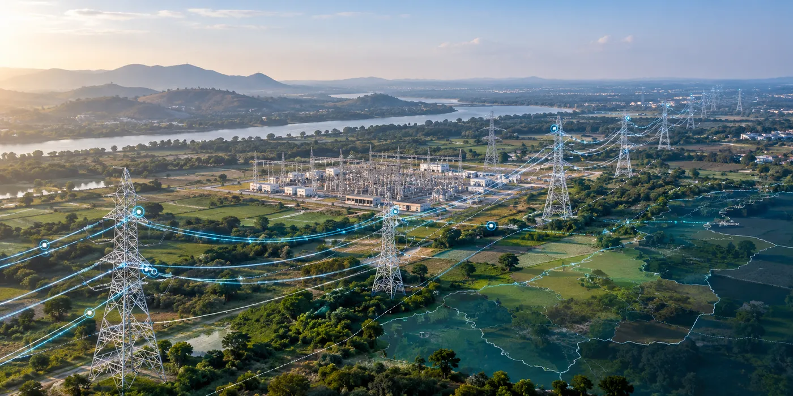

About the Client
The engagement involved electrical transmission utilities across three Indian states, responsible for managing critical power-transmission infrastructure and supporting reliable electricity delivery across large and complex networks.
The implementation covered utilities collectively serving approximately 28 million users.
The Challenge
Electrical transmission utilities manage extensive networks of geographically distributed assets and large volumes of spatial and operational information.
Managing this information effectively requires a structured geospatial environment that enables utilities to organize network data, improve visibility of infrastructure and make location-based information accessible for planning and operational requirements.
Across large transmission networks, an Enterprise GIS provides the spatial foundation needed to bring geographically distributed network and asset information into a consistent digital environment.
The Solution
CS TECH Ai implemented Enterprise GIS solutions for electrical transmission utilities across three Indian states, creating a geospatial foundation for managing and utilizing transmission-network information.
The GIS environment enabled transmission infrastructure and associated information to be represented spatially, helping utilities establish a more structured approach to network and asset information.
CS TECH Ai's broader utility GIS capabilities encompass GIS and engineering, data modelling and design, asset and network analysis, and location-based enterprise solutions designed to improve the management and use of electrical-network data.
For transmission utilities, such an enterprise geospatial framework provides a common foundation for:
- Organizing and visualizing geographically distributed network information
- Managing spatial information associated with transmission infrastructure
- Supporting network planning and analysis
- Improving access to location-based asset information
- Enabling geospatial information to support wider utility workflows
The Impact
The implementation established an enterprise geospatial foundation across electrical transmission utilities in three Indian states, collectively covering approximately 28 million users.
By bringing transmission-network information into a structured GIS environment, the solution provided utilities with improved spatial visibility of their infrastructure and a stronger information base for network management, planning and decision-making.